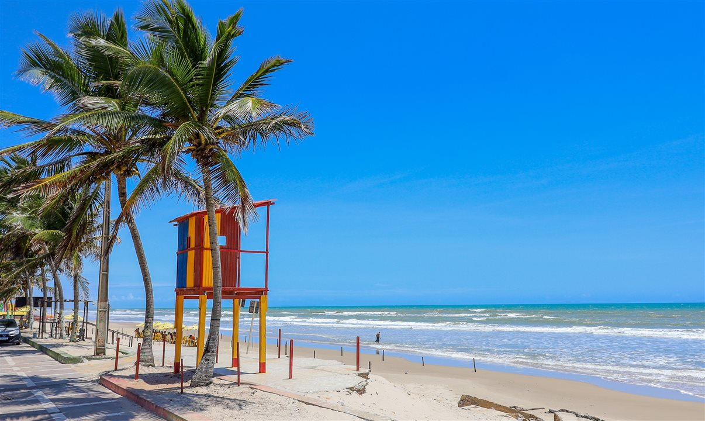

Sergipe, o estado mais pequeno do Brasil, situa-se na costa atlântica da região do nordeste. A capital, Aracaju, é conhecida pelas praias, tal como a Praia da Atalaia, com o seu longo passeio. Fundada em 1590, a antiga capital, São Cristóvão, alberga edifícios da era colonial, incluindo o convento e a Igreja de São Francisco, do século XVII. O Cânion do Xingó, no rio de São Francisco, ladeia um popular lago para passeios de barco.
 VOLTAR